Member Search

|

By misof
TopCoder Member
In this part of the article we will focus on estimating the time complexity for recursive programs. In essence, this will lead to finding the order of growth for solutions of recurrence equations. Don't worry if you don't understand what exactly is a recurrence solution, we will explain it in the right place at the right time. But first we will consider a simpler case - programs without recursion.
First of all let's consider simple programs that contain no function calls. The rule of thumb to find an upper bound on the time complexity of such a program is:
- estimate the maximum number of times each loop can be executed,
- add these bounds for cycles following each other.
- multiply these bounds for nested cycles/parts of code,
Example 1. Estimating the time complexity of a random piece of code.
int result=0; // 1
for (int i=0; i<N; i++) // 2
for (int j=i; j<N; j++) { // 3
for (int k=0; k<M; k++) { // 4
int x=0; // 5
while (x<N) { result++; x+=3; } // 6
} // 7
for (int k=0; k<2*M; k++) // 8
if (k%7 == 4) result++; // 9
} // 10
The time complexity of the while-cycle in line 6 is clearly O(N) - it
is executed no more than N/3 + 1 times.
Now consider the for-cycle in lines 4-7. The variable k is clearly incremented O(M) times. Each time the whole while-cycle in line 6 is executed. Thus the total time complexity of the lines 4-7 can be bounded by O(MN).
The time complexity of the for-cycle in lines 8-9 is O(M). Thus the execution time of lines 4-9 is O(MN + M) = O(MN).
This inner part is executed O(N2) times - once for each possible combination of i and j. (Note that there are only N(N + 1)/2 possible values for [i, j]. Still, O(N2) is a correct upper bound.)
From the facts above follows that the total time complexity of the algorithm in Example 1 is O(N2.MN) = O(MN3).
From now on we will assume that the reader is able to estimate the time complexity of simple parts of code using the method demonstrated above. We will now consider programs using recursion (i.e. a function occasionally calling itself with different parameters) and try to analyze the impact of these recursive calls on their time complexity.
Using recursion to generate combinatorial objects
One common use of recursion is to implement a backtracking algorithm to generate all possible solutions of a problem. The general idea is to generate the solution incrementally and to step back and try another way once all solutions for the current branch have been exhausted.
This approach is not absolutely universal, there may be problems where it is impossible to generate the solution incrementally. However, very often the set of all possible solutions of a problem corresponds to the set of all combinatorial objects of some kind. Most often it is the set of all permutations (of a given size), but other objects (combinations, partitions, etc.) can be seen from time to time.
As a side note, it is always possible to generate all strings of zeroes and ones, check each of them (i.e. check whether it corresponds to a valid solution) and keep the best found so far. If we can find an upper bound on the size of the best solution, this approach is finite. However, this approach is everything but fast. Don't use it if there is any other way.
Example 2. A trivial algorithm to generate all permutations of numbers 0 to N - 1.
vector<int> permutation(N);
vector<int> used(N,0);
void try(int which, int what) {
// try taking the number "what" as the "which"-th element
permutation[which] = what;
used[what] = 1;
if (which == N-1)
outputPermutation();
else
// try all possibilities for the next element
for (int next=0; next<N; next++)
if (!used[next])
try(which+1, next);
used[what] = 0;
}
int main() {
// try all possibilities for the first element
for (int first=0; first<N; first++)
try(0,first);
}
In this case a trivial lower bound on the time complexity is the number of possible solutions. Backtracking algorithms are usually used to solve hard problems - i.e. such that we don't know whether a significantly more efficient solution exists. Usually the solution space is quite large and uniform and the algorithm can be implemented so that its time complexity is close to the theoretical lower bound. To get an upper bound it should be enough to check how much additional (i.e. unnecessary) work the algorithm does.
The number of possible solutions, and thus the time complexity of such algorithms, is usually exponential - or worse.
Divide&conquer using recursion
From the previous example we could get the feeling that recursion is evil and leads to horribly slow programs. The contrary is true. Recursion can be a very powerful tool in the design of effective algorithms. The usual way to create an effective recursive algorithm is to apply the divide&conquer paradigm - try to split the problem into several parts, solve each part separately and in the end combine the results to obtain the result for the original problem. Needless to say, the "solve each part separately" is usually implemented using recursion - and thus applying the same method again and again, until the problem is sufficiently small to be solved by brute force.
Example 3. The sorting algorithm MergeSort described in pseudocode.
MergeSort(sequence S) {
if (size of S <= 1) return S;
split S into S_1 and S_2 of roughly the same size;
MergeSort(S_1);
MergeSort(S_2);
combine sorted S_1 and sorted S_2 to obtain sorted S;
return sorted S;
}
Clearly O(N) time is enough to split a sequence with N elements into two parts. (Depending on the implementation this may be even possible in constant time.) Combining the shorter sorted sequences can be done in (N): Start with an empty S. At each moment the smallest element not yet in S is either at the beginning of S1 or at the beginning of S2. Move this element to the end of S and continue.
Thus the total time to MergeSort a sequence with N elements is (N) plus the time needed to make the two recursive calls.
Let f (N) be the time complexity of MergeSort as defined in the previous part of our article. The discussion above leads us to the following equation:
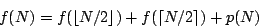
where p is a linear function representing the amount of work spent on splitting the sequence and merging the results.
Basically, this is just a recurrence equation. If you don't know this term, please don't be afraid. The word "recurrence" stems from the latin phrase for "to run back". Thus the name just says that the next values of f are defined using the previous (i.e. smaller) values of f.
Well, to be really formal, for the equation to be complete we should specify some initial values - in this case, f (1). This (and knowing the implementation-specific function p) would enable us to compute the exact values of f.
But as you hopefully understand by now, this is not necessarily our goal. While it is theoretically possible to compute a closed-form formula for f (N), this formula would most probably be really ugly... and we don't really need it. We only want to find a -bound (and sometimes only an O-bound) on the growth of f. Luckily, this can often be done quite easily, if you know some tricks of the trade.
As a consequence, we won't be interested in the exact form of p, all we need to know is that p(N) = (N). Also, we don't need to specify the initial values for the equation. We simply assume that all problem instances with small N can be solved in constant time.
The rationale behind the last simplification: While changing the initial values does change the solution to the recurrence equation, it usually doesn't change its asymptotic order of growth. (If your intuition fails you here, try playing with the equation above. For example fix p and try to compute f (8), f (16) and f (32) for different values of f (1).)
If this would be a formal textbook, at this point we would probably have to develop some theory that would allow us to deal with the floor and ceiling functions in our equations. Instead we will simply neglect them from now on. (E.g. we can assume that each division will be integer division, rounded down.)
A reader skilled in math is encouraged to prove that if p is a polynomial (with non-negative values on N) and q(n) = p(n + 1) then q(n) = (p(n)). Using this observation we may formally prove that (assuming the f we seek is polynomially-bounded) the right side of each such equation remains asymptotically the same if we replace each ceiling function by a floor function.
The observations we made allow us to rewrite our example equation in a more simple way:
Note that this is not an equation in the classical sense. As in the examples in the first part of this article, the equals sign now reads "is asymptotically equal to". Usually there are lots of different functions that satisfy such an equation. But usually all of them will have the same order of growth - and this is exactly what we want to determine. Or, more generally, we want to find the smallest upper bound on the growth of all possible functions that satisfy the given equation.
In the last sections of this article we will discuss various methods of solving these "equations". But before we can do that, we need to know a bit more about logarithms.
By now, you may have already asked one of the following questions: If the author writes that some complexity is e.g. O(N log N), what is the base of the logarithm? In some cases, wouldn't O(N log2N) be a better bound?
The answer: The base of the logarithm does not matter, all logarithmic functions (with base > 1) are asymptotically equal. This is due to the well-known equation:
Note that given two bases a, b, the number 1/logba is just a constant, and thus the function logaN is just a constant multiple of logbN.
To obtain more clean and readable expressions, we always use the notation log N inside big-Oh expressions, even if logarithms with a different base were used in the computation of the bound.
By the way, sadly the meaning of log N differs from country to country. To avoid ambiguity where it may occur: I use log N to denote the decadic (i.e. base-10) logarithm, ln N for the natural (i.e. base-e) logarithm, lg N for the binary logarithm and logbN for the general case.
Now we will show some useful tricks involving logarithms, we will need them later. Suppose a, b are given constants such that a, b > 1.
From (2) we get:
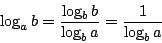
Using this knowledge, we can simplify the term 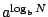 as follows:

This method can be summarized in one sentence: Guess an asymptotic upper bound on f and (try to) prove it by induction.
As an example, we will prove that if f satisfies the equation (1) then f (N) = O(N log N).
From (1) we know that
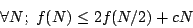
for some c. Now we will prove that if we take a large enough (but constant) d
then for almost all N we have
f (N)  dN lg N.
We will start by proving the induction step.
dN lg N.
We will start by proving the induction step.
Assume that
f (N/2)  d (N/2)lg(N/2). Then
d (N/2)lg(N/2). Then

In other words, the induction step will hold as long as d > c. We are always able to choose such d.
We are only left with proving the inequality for some initial value N. This gets quite ugly when done formally. The general idea is that if the d we found so far is not large enough, we can always increase it to cover the initial cases.
Note that for our example equation we won't be able to prove it for N = 1, because lg 1 = 0. However, by taking d > 2(f (1) + f (2) + f (3) + c) we can easily prove the inequality for N = 2 and N = 3, which is more than enough.
Please note what exactly did we prove. Our result is that if f satisfies the
equation (1)
then for almost all N we have
f (N)  dN lg N, where d is some fixed constant.
Conclusion: from (1)
it follows that
f (N) = O(N lg N).
dN lg N, where d is some fixed constant.
Conclusion: from (1)
it follows that
f (N) = O(N lg N).
To a beginner, the previous method won't be very useful. To use it successfully we need to make a good guess - and to make a good guess we need some insight. The question is, how to gain this insight? Let's take a closer look at what's happening, when we try to evaluate the recurrence (or equivalently, when we run the corresponding recursive program).
We may describe the execution of a recursive program on a given input by a rooted tree. Each node will correspond to some instance of the problem the program solves. Consider an arbitrary vertex in our tree. If solving its instance requires recursive calls, this vertex will have children corresponding to the smaller subproblems we solve recursively. The root node of the tree is the input of the program, leaves represent small problems that are solved by brute force.
Now suppose we label each vertex by the amount of work spent solving the corresponding problem (excluding the recursive calls). Clearly the runtime is exactly the sum of all labels.
As always, we only want an asymptotic bound. To achieve this, we may "round" the labels to make the summation easier. Again, we will demonstrate this method on examples.
Example 4. The recursion tree for MergeSort on 5 elements.

The recursion tree for the corresponding recurrence equation. This time, the number inside each vertex represents the number of steps the algorithm makes there.
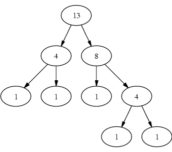
Note that in a similar way we may sketch the general form of the recursion tree for any recurrence. Consider our old friend, the equation (1). Here we know that there is a number c such that the number of operations in each node can be bound by (c times the current value of N). Thus the tree in the example below is indeed the worst possible case.
Example 5. A worst-case tree for the general case of the recurrence equation (1).

Now, the classical trick from combinatorics is to sum the elements in an order different from the order in which they were created. In this case, consider an arbitrary level of the tree (i.e. a set of vertices with the same depth). It is not hard to see that the total work on each of the levels is cN.
Now comes the second question: What is the number of levels? Clearly, the leaves correspond to the trivial cases of the algorithm. Note that the size of the problem is halved in each step. Clearly after lg N steps we are left with a trivial problem of size 1, thus the number of levels is (log N).
Combining both observations we get the final result: The total amount of work done here is (cN x log N) = (N log N).
A side note. If the reader doesn't trust the simplifications we made when using this method, he is invited to treat this method as a "way of making a good guess" and then to prove the result using the substitution method. However, with a little effort the application of this method could also be upgraded to a full formal proof.
By now you should be asking: Was it really only a coincidence that the total amount of work on each of the levels in Example 5 was the same?
The answer: No and yes. No, there's a simple reason why this happened, we'll discover it later. Yes, because this is not always the case - as we'll see in the following two examples.
Example 6. Let's try to apply our new "recursion tree" method to solve the following recurrence equation:
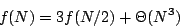
The recursion tree will look as follows:
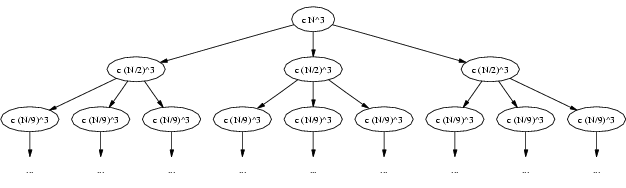
Let's try computing the total work for each of the first few levels. Our results:
| level | 1 | 2 | 3 | ... |
| work | cN3 | cN3 | 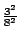cN3 | ... |
Clearly as we go deeper in the tree, the total amount of work on the current level decreases. The question is, how fast does it decrease? As we move one level lower, there will be three times that many subproblems. However, their size gets divided by 2, and thus the time to process each of them decreases to one eighth of the original time. Thus the amount of work is decreased by the factor 3/8.
But this means that the entries in the table above form a geometric progression. For a while assume that this progression is infinite. Then its sum would be
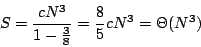
Thus the total amount of work in our tree is (N3) (summing the infinite sequence gives us an upper bound). But already the first element of our progression is (N3). It follows that the total amount of work in our tree is (N3) and we are done.
The important generalization of this example: If the amounts of work at subsequent levels of the recursion tree form a decreasing geometric progression, the total amount of work is asymptotically the same as the amount of work done in the root node.
From this result we can deduce an interesting fact about the (hypothetical) algorithm behind this recurrence equation: The recursive calls didn't take much time in this case, the most time consuming part was preparing the recursive calls and/or processing the results. (I.e. this is the part that should be improved if we need a faster algorithm.)
Example 7. Now let's try to apply our new "recursion tree" method to solve the following recurrence equation:
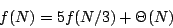
The recursion tree will look as follows:
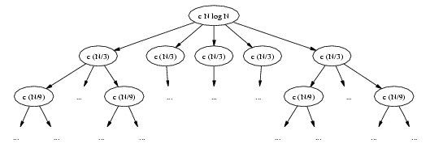
Again, let's try computing the total work for each of the first few levels. We get:
| level | 1 | 2 | 3 | ... |
| work | cN | cN | 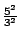cN | ... |
This time we have the opposite situation: As we go deeper in the tree, the total amount of work on the current level increases. As we move one level lower, there will be five times that many subproblems, each of them one third of the previous size, the processing time is linear in problem size. Thus the amount of work increased by the factor 5/3.
Again, we want to compute the total amount of work. This time it won't be that easy, because the most work is done on the lowest level of the tree. We need to know its depth.
The lowest level corresponds to problems of size 1. The size of a problem on level k is N/3k. Solving the equation 1 = N/3k we get k = log3N. Note that this time we explicitly state the base of the logarithm, as this time it will be important.
Our recursion tree has log3N levels. Each of the levels has five times more vertices than the previous one, thus the last level has 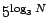 levels. The total work done on this level is then 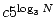.
Note that using the trick (3) we may rewrite this as 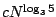.
Now we want to sum the work done on all levels of the tree. Again, this is a geometric progression. But instead of explicitly computing the sum, we now reverse it. Now we have a decreasing geometric progression...and we are already in the same situation as in the previous example. Using the same reasoning we can show that the sum is asymptotically equal to the largest element.
It follows that the total amount of work in our tree is and we are done.
Note that the base-3 logarithm ends in the exponent, that's why the base is important. If the base was different, also the result would be asymptotically different.
We already started to see a pattern here. Given a recurrence equation, take the corresponding recurrence tree and compute the amounts of work done on each level of the tree. You will get a geometric sequence. If it decreases, the total work is proportional to work done in the root node. If it increases, the total work is proportional to the number of leaves. If it remains the same, the total work is (the work done on one level) times (the number of levels).
Actually, there are a few ugly cases, but almost often one of these three cases occurs. Moreover, it is possible to prove the statements from the previous paragraph formally. The formal version of this theorem is known under the name Master Theorem.
For reference, we give the full formal statement of this theorem. (Note that knowing the formal proof is not necessary to apply this theorem on a given recurrence equation.)
Let a 1 and b > 1 be integer constants. Let p be a non-negative non-decreasing function. Let f be any solution of the recurrence equation
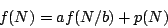
Then:
- If for some > 0 then
- If , then f (N) = (p(N)log N).
-
If for some
> 0,
and if
ap(N/b)
 cp(N) for some c < 1 and for almost all N,
then
f (N) = (p(N)).
cp(N) for some c < 1 and for almost all N,
then
f (N) = (p(N)).
Case 1 corresponds to our Example 7. Most of the time is spent making the recursive calls and it's the number of these calls that counts.
Case 2 corresponds to our Example 5. The time spent making the calls is roughly equal to the time to prepare the calls and process the results. On all levels of the recursion tree we do roughly the same amount of work, the depth of the tree is always logarithmic.
Case 3 corresponds to our Example 6. Most of the time is spent on preparing the recursive calls and processing the results. Usually the result will be asymptotically equal to the time spent in the root node.
Note the word "usually" and the extra condition in Case 3. For this result to hold we need p to be somehow "regular" - in the sense that for each node in the recursion tree the time spent in the node must be greater than the time spent in its chidren (excluding further recursive calls). This is nothing to worry about too much, most probably all functions p you will encounter in practice will satisfy this condition (if they satisfy the first condition of Case 3).
Example 8. Let f (N) be the time Strassen's fast matrix multiplication algorithm needs to multiply two N x N square matrices. This is a recursive algorithm, that makes 7 recursive calls, each time multiplying two (N/2) x (N/2) square matrices, and then computes the answer in (N2) time.
This leads us to the following recurrence equation:
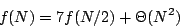
Using the Master Theorem, we see that Case 1 applies. Thus the time complexity of Strassen's algorithm is 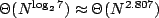. Note that by implementing the definition of matrix multiplication we get only a (N3) algorithm.
Example 9. Occasionally we may encounter the situation when the problems in the recursive calls are not of the same size. An example may be the "median-of-five" algorithm to find the k-th element of an array. It can be shown that its time complexity satisfies the recurrence equation
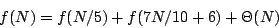
How to solve it? Can the recursion tree be applied also in such asymmetric cases? Is there a more general version of Master Theorem that handles also these cases? And what should I do with the recurrence f (N) = 4f (N/4) + (N log N), where the Master Theorem doesn't apply?
We won't answer these questions here. This article doesn't claim to be the one and only reference to computational complexity. If you are already asking these questions, you understand the basics you need for programming challenges - and if you are interested in knowing more, there are good books around that can help you.
Thanks for reading this far. If you have any questions, comments, bug reports or any other feedback, please use the Round tables. I'll do my best to answer.